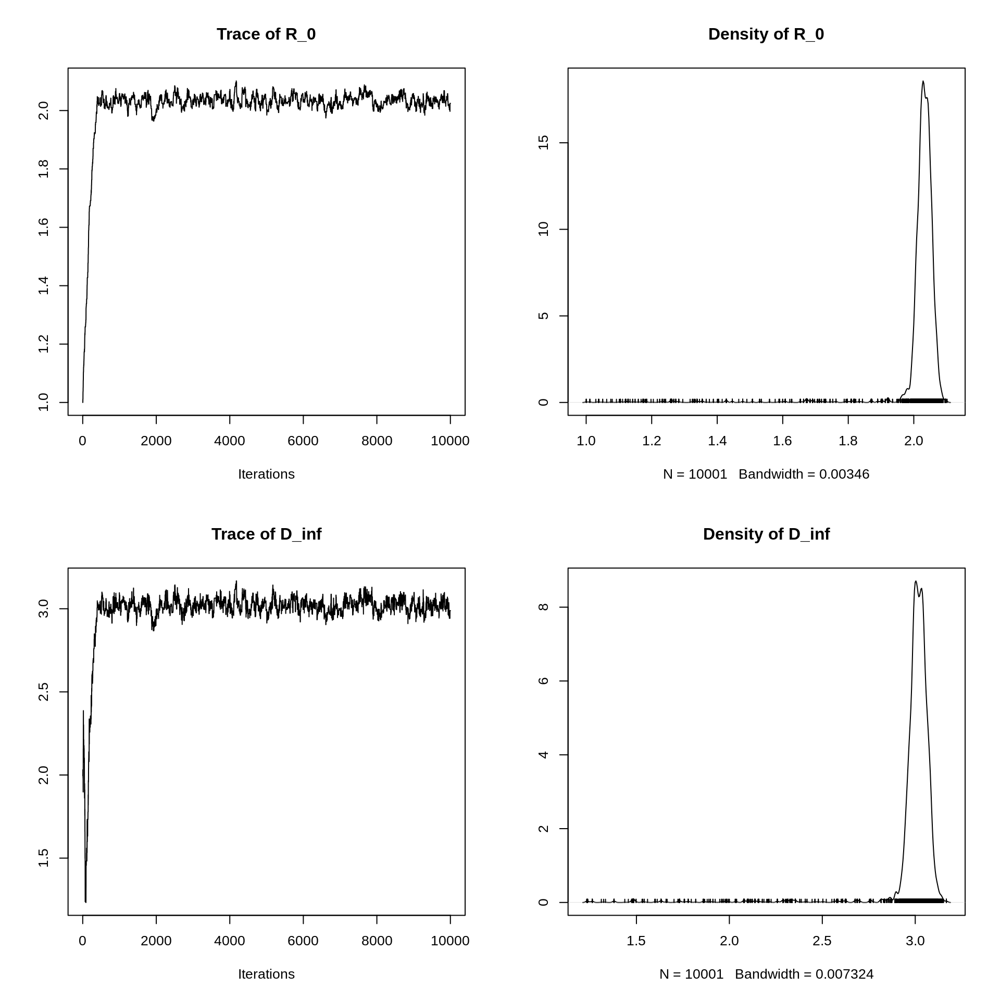
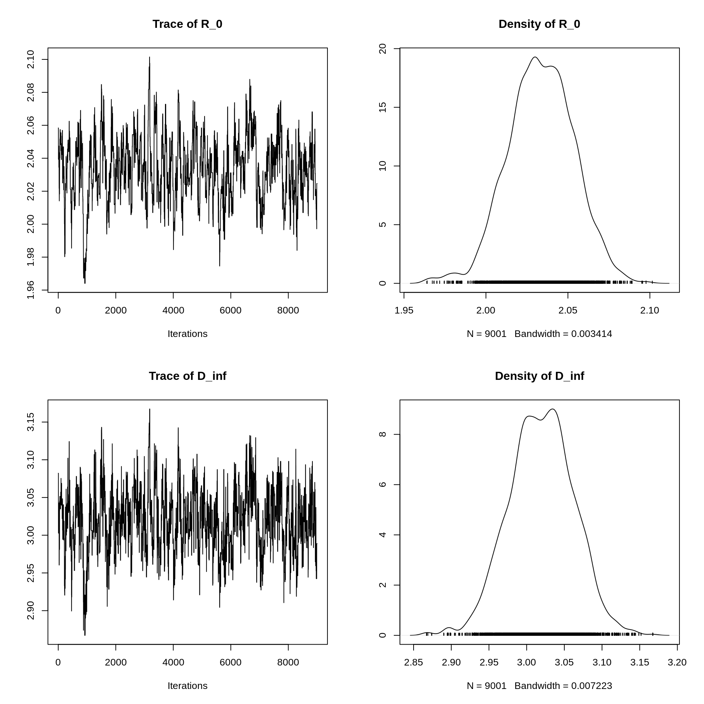
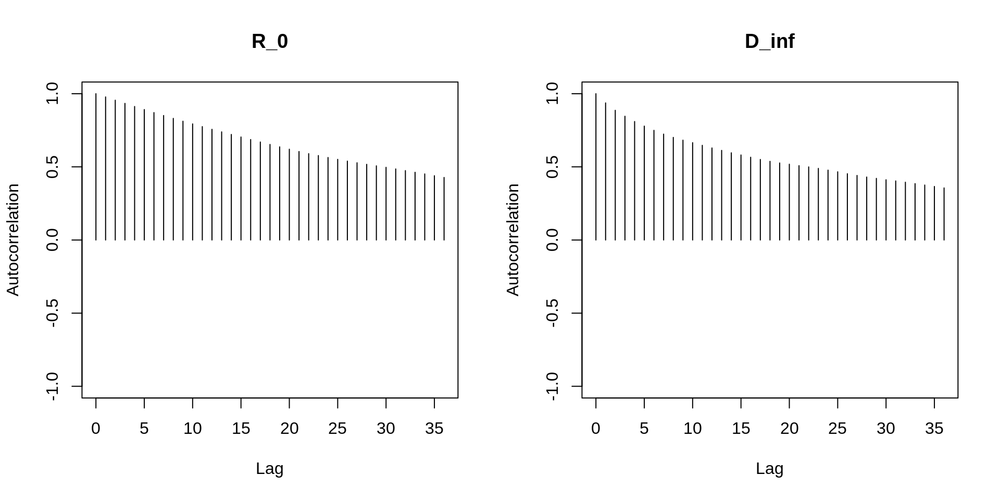
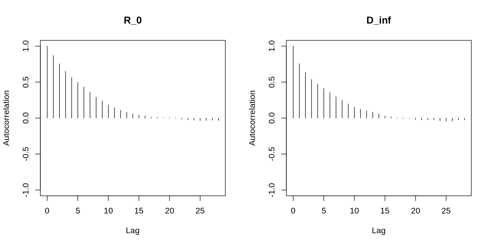
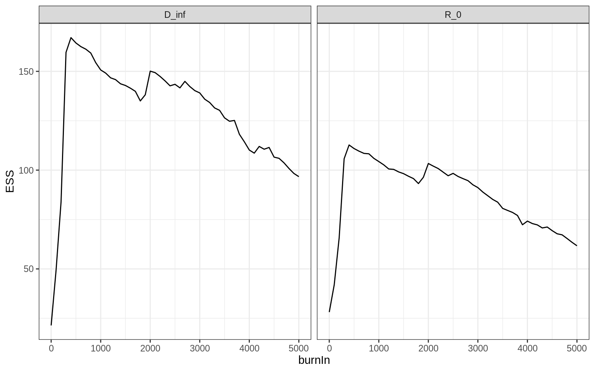

The aim of this session is to learn how to interpret the results of MCMC sampling, as well as to improve the performance of the sampler. More specifically, you will
coda for assessing and interpreting MCMC runsIf we are fitting more than one parameter, it can be beneficial to use a multivariate proposal distribution such as the multivariate Gaussian. We have included a function called mcmcMhin the fitR package which is built on the Metropolis-Hastings sampler of the last session but extends it to a scenario of multiple parameters by replacing the univariate Gaussian proposal distribution of my_mcmcMh with a multivariate Gaussian, using the rtmvtnorm from the tmvtnorm package. In fact, the rtmvtnorm function calculates the probability density of a vector under a truncated multivariate Gaussian, that is one that can have boundaries. We will get back to this issue later.
The mcmcMh takes the same parameters as the my_mcmcMh function you used in the previous practical session and can be used the same way, but it also allows to specify a covariance matrix (via the covmat parameter) instead of proposalSd. For now, we will keep using proposalSd but pass it a named vector of standard deviations, e.g. proposalSd = c(R_0 = 1, D_inf = 2), in which case the sampler will use independent normal draws for the proposal distribution with standard deviation 1 and 2, respectively.
As a running example, we are going to analyse the data set epi3, which was generated from an SIR model with unknown basic reproduction number \(R_0\) and infectious period \(D_\mathrm{inf}\).
You can visualise the epi3 data set with
plotTraj(data = epi3)The first step is to write a wrapper for the log-posterior similar to my_dLogPosteriorR0Epi1 but for more than one parameter and using the data set epi3 – if you have trouble with that, you can use our solution.
Once you have your wrapper, use the mcmcMh function with parameters target, initTheta, proposalSd and nIterations to sample from the posterior distribution. Take 15 minutes to sample from the joint posterior of \(R_0\) and \(D_\mathrm{inf}\). In particular, try a few values for the vector of standard deviations proposalSd and see how this affects the acceptance rate.
You should notice that getting the acceptance rate to a desired value is harder when dealing with multiple parameters. Actually, there are a few strategies available for doing so, which we will learn about in this practical session.
For instance, if you experience a very low or a very high acceptance rate, it is a good idea to first consider each parameter individually, and tweak the corresponding standard deviation of the proposal until a desired acceptance rate is achieved. Once this is done, you can start exploring multiple parameters at once, and carefully adjust the proposal steps to get good acceptance rates. Later, we will look at a way to automatically adapt the proposal steps on the basis of the samples taken so far.
Whenever one runs MCMC, it is important to assess its performance. It is very difficult (arguably, impossible) to be fully sure that a particular set of MCMC runs provides reliable analysis, but, fortunately, there are ways to spot when things go wrong. We will look at assessing three aspects of MCMC: mixing, burn-in and run length
We will use functions from the R package coda to diagnose MCMC runs. We suggest that, once you’ve read this section, you spend a good half hour experimenting with the Metropolis-Hastings sampler and the coda package. Take your time to fully understand the behaviour of the Metropolis-Hastings sampler – this is what we will use throughout this course. Don’t only try to get the best fit – it is also worth experimenting with what you need to do to break the sampler, i.e. get results inconsistent with what you found before. You could try to see if this happens when starting set from different initial values, with different values for the step size (proposalSd), and assess the impact on the summary statistics and plots introduced below. Similarly, you could experiment with the burn-in and thinning (which we will introduce below), and see what impact they have.
Diagnosing MCMC usually implies a graphical assessment of the behaviour of the sampler with respect to each fitted parameter, as well as of some summary statistics, and coda provides a rich suite of functions to this end. We suggest that you use the commands below to assess MCMC runs with different values of the initial parameters initTheta and step size proposalSd. If you didn’t get an MCMC run to work, you can look at the output of an MCMC run that we did for you and saved in the mcmcEpi3 object, which you can load with data(mcmcEpi):
data(mcmcEpi)
head(mcmcEpi3)## R_0 D_inf
## [1,] 1.00000 2.000000
## [2,] 1.00036 1.996335
## [3,] 1.00036 1.996335
## [4,] 1.01127 2.031932
## [5,] 1.01127 2.031932
## [6,] 1.01127 2.031932This run was created using the commands shown here. In the following, we assume that you assigned the result of my_mcmcMh to a variable called trace, but of course you can call this anything you like.
To use coda, we must first convert our trace to a format that coda understands. To this end, we use the mcmc function from that package:
library("coda")
mcmcTrace <- mcmc(mcmcEpi3)We can get summary statics using summary
summary(mcmcTrace)##
## Iterations = 1:10001
## Thinning interval = 1
## Number of chains = 1
## Sample size per chain = 10001
##
## 1. Empirical mean and standard deviation for each variable,
## plus standard error of the mean:
##
## Mean SD Naive SE Time-series SE
## R_0 2.016 0.1042 0.001042 0.01965
## D_inf 2.989 0.1835 0.001835 0.03967
##
## 2. Quantiles for each variable:
##
## 2.5% 25% 50% 75% 97.5%
## R_0 1.796 2.019 2.032 2.046 2.071
## D_inf 2.565 2.987 3.016 3.046 3.099This provides the following information:
We can also compute the acceptance rate (that is 1 minus the rejection rate).
acceptanceRate <- 1 - rejectionRate(mcmcTrace)
acceptanceRate## R_0 D_inf
## 0.2168 0.2168Lastly, we can compute the effective sample size, that is an estimate for the number of independent samples (taking into account autocorrelations) generated by the MCMC run.
effectiveSize(mcmcTrace)## R_0 D_inf
## 28.14071 21.39217We need to make sure that the MCMC sampler explores the parameter space efficiently, that is that it doesn’t reject or accept too many proposals. If too many proposals are rejected, we need many simulations to generate a sufficient number of parameter samples. If too many proposals are accepted, we don’t gain much information about the underlying distribution.
Trace plots provide an important tool for assessing mixing of a chain. Density plots are smoothed histograms of the samples, that is they show the function that we are trying to explore. We can get trace and density plots for all variables in an MCMC trace using plot.
plot(mcmcTrace)
NB: the “bandwidth” indicated is automatically selected by the function to smooth the density plots.
In the trace plots, we want to try to avoid flat bits (where the chain stays in the same state for too long) or too many consecutive steps in one direction. In this case, it looks like there was a burn-in of about 1000 iterations, after which the MCMC sampler seems to mix well.
We also see that the sampler never moves beyond 2.2 for \(R_0\), and never beyond 3.5 for \(D_\mathrm{inf}\). To assess the reliability of our output, we should start chains with higher initial values of \(R_0\) and \(D_\mathrm{inf}\) and check that the sampler converges to the same estimates.
If we want to get a more detailed view of the posterior distribution (i.e., the density of the samples) around its maximum, we can cut the burn-in period out using the burnAndThin (this function is part of the fitR package but returns objects compatible with coda functions):
mcmcTraceBurned <- burnAndThin(mcmcTrace, burn = 1000)
plot(mcmcTraceBurned)
It is sometimes said that we are aiming for the trace to look like a hairy caterpillar. Can you see the resemblance to the plots on the left?
Another way to check for convergence is to look at the autocorrelations between the samples returned by our MCMC. The lag-\(k\) autocorrelation is the correlation between every sample and the sample \(k\) steps before. This autocorrelation should become smaller as \(k\) increases, i.e. samples can be considered as independent. If, on the other hand, autocorrelation remains high for higher values of \(k\), this indicates a high degree of correlation between our samples and slow mixing.
autocorr.plot(mcmcTraceBurned)
In this case, the autocorrelation drops with increasing \(k\) (or “lag”, the x-axis in the plot), which is a good sign. If autocorrelation persists, we can thin the MCMC chain, that is we discard \(n\) samples for every sample that we keep. To do this, again we use burnAndThin and pass the number of samples \(n\) to be discarded for each kept sample as thin argument:
mcmcTraceBurnedThinned <- burnAndThin(mcmcTraceBurned, thin = 5)
autocorr.plot(mcmcTraceBurnedThinned)
It has been argued that thinning is actually not very useful, unless one wants to reduce the amount of memory and storage space in long chains. Instead of thinning to, say, keep only 1 out every 10 samples, it is usually more efficient (in terms of the effective sample size) to just run a chain 10 times as long, but it will take 10 times more storage space.
In the above example, we assessed burn-in based on a glance at the trace plots. There are several diagnostics available to make this process more systematic, such as the Geweke diagnostic (geweke.diag), the Heidelberger-Welch diagnostic (heidel.diag), and the Raftery-Lewis diagnostic (raftery.diag). A discussion of these is beyond the scope and purpose of this session, but if you are interested have a look at the R help pages for these functions (using ?geweke.diag etc.) and the reference below for more information.
A better estimate for burn-in cut-off is via the effective sample size (ESS), that is the number of independent samples equivalent to our number of autocorrelated samples. The samples in the burn-in are not very informative, and if the burn-in period is estimated to be too short this will reduce the ESS size. On the other hand, if the burn-in period is estimated to be too long, informative samples are being thrown away, again reducing the ESS. The ESS should be maximised at the optimal estimate of the burn-in.
We can plot ESS against burn-in:
plotEssBurn(mcmcTrace)
A good optimal burn-in length would be when the ESS has hit its maximum for all parameters, that is at around 500 here.
It is usually difficult to tell for how long one should run the chain. If the trace of all parameters shows the “caterpillar”-like behaviour such as shown above, it is a good indication that the MCMC is efficiently sampling from a maximum in the underlying distribution, but the sampler might be stuck in a local maximum, and it might need more time to leave that maximum and reach other parts of the parameter space, with potentially other maxima.
There are no general rules for how long one needs to run the chain, but generally it is a good idea to start the chain from different starting points and make sure they converge to the same density plots. In fact, it is good practice to always run multiple chains. Secondly, one can decide in advance on the number of samples one wants from the underlying distribution, and run the chain until the effective sample size reaches that number. In practice, however, this is a somewhat arbitrary decision, and apart from careful diagnosis and running multiple chains there is not much one can do to get a reliable estimate of the necessary number of iterations.
Getting an MCMC sampler to mix well is, arguably, the most difficult and most important task for using it efficiently. We will discuss two ways for improving mixing: dealing with parameters with limited support and adaptive MCMC.
Often, we have situations where parameters are constrained to remain between certain values. For example, negative values do not make sense for the basic reproduction number \(R_0\) or the duration of infection \(D_\mathrm{inf}\), and probabilities have to stay between 0 and 1. We call the values that a parameter can, in principle, take the support of a parameter. This is different from the prior distribution which encodes our prior knowledge of likely values of a parameter among the values it can take.
If we ignore the limited support that parameters can have, we might waste MCMC steps, for example when the random draw from the proposal distribution suggests a step to a negative value of a parameter with positive support (e.g., \(R_0\)). In this case, proposals are rejected not because the parameter fails to match the data, but because they are in impossible parts of the parameter space.
A first way for dealing with parameters with limited support applies mostly to parameters which are limited to be positive, as is often the case for rates, such as the ones in the SIR model. A way to force a parameter to be positive is to transform them to the log-scale, that is to run MCMC on \(\log{(R_0)}\) instead of \(R_0\). When calculating the model, we can use the exponential function to transform the parameter back.
An SIR model where the parameters are defined on the log-scale is contained in the sirExpDeter object that can be loaded with data(models).
You can, again, use a wrapper function and use MCMC to explore the parameters.
my_dLogPosteriorExpEpi3 <- function(theta) {
return(my_dLogPosterior(
fitmodel = sirExpDeter,
theta = theta,
initState = c(S = 999, I = 1, R = 0),
data = epi3
))
}
trace <- my_mcmcMh(
target = my_dLogPosteriorExpEpi3,
initTheta = c(R_0 = log(1), D_inf = log(2)),
proposalSd = c(0.1, 0.01),
nIterations = 1000
)Take 10 minutes to check whether this makes a difference to acceptance rates?
Another way for dealing with parameters with limited support is to use truncated proposal distributions. There are R packages for truncated normal and multivariate normal distributions – these never draw proposals outside of specified limits. However, the use of such truncated distributions in the proposal kernel must be accounted for when computing the acceptance ratio. Otherwise your chain might not converge to the correct posterior distribution (look at this excellent post by Darren Wilkinson for a detailed example).
The mcmcMh function implemented in the fitR package uses the truncated multivariate normal random generator from the tmvtnorm package to draw proposals. Of course the function accounts for this asymmetric proposal to calculate the acceptance ratio. The limits of the support of the proposal distribution can be specified with the limits argument to mcmcMh, in which you can specified lower and/or upper limits. For example, to get a lower bound of 0 for \(R_0\) and \(D_\mathrm{inf}\), we could write
my_dLogPosteriorEpi3 <- function(theta) {
return(my_dLogPosterior(
fitmodel = sirDeter,
theta = theta,
initState = c(S = 999, I = 1, R = 0),
data = epi3
))
}trace <- mcmcMh(
target = my_dLogPosteriorEpi3,
initTheta = c(R_0 = 1, D_inf = 2),
proposalSd = c(0.1, 0.01),
nIterations = 10000,
limits = list(lower = c(R_0 = 0, D_inf = 0))
)Take 10 minutes to try a proposal distribution with a wide proposal distribution, and with or without limits. Do the limits make a difference to the acceptance rate?
The best proposal distribution is the one that best matches the target distribution. While we cannot know this in advance, we can use trial MCMC runs to learn about the target distribution, and use this information to come up with a better proposal distribution. This does mean, however, that we waste computational time in the discarded trial runs, and this method needs to be applied carefully.
In addition to truncated proposal distributions, our function mcmcMh also implements some adaptive features. In particular, it calculates the empirical covariance matrix, that is the covariance matrix as it appears from the distribution of accepted proposals. This is returned as covmat.empirical:
trace$covmatEmpirical## R_0 D_inf
## R_0 0.00948875 0.02201203
## D_inf 0.02201203 0.05279508The diagonal elements of this matrix tell you about the typical variance of accepted steps and thus gives you an indication of an appropriate step size. The off-diagonal elements tell you about correlations in the parameters. In this case, there is positive correlation between \(R_0\) and \(D_\mathrm{inf}\), that is greater values of \(R_0\) in accepted proposals tend to coincide with greater values of \(D_\mathrm{inf}\). Can you think of why that is the case? We will come back to the issue of correlations and their impact on assessing model fits tomorrow.
Instead of manually adjusting the proposal distribution as we have done so far, we can automate this process. If this is done carefully, the samples generated by the MCMC converge to the correct distribution. We have implemented this in the mcmcMh function. This takes three parameters relating to adaptive MCMC: adaptive.size.start, adaptive.shape.start and adapt.size.cooling.
The idea is the following: we let the MCMC run for a while and monitor the acceptance rate. After adapt.size.start iterations, we start adapting the size of the proposal distribution, that is we scale it to smaller/larger steps depending if the acceptance is too small/large. This is done until adapt.shape.start proposals have been accepted, at which point we take the empirical covariance matrix and start adapting the shape of the proposal distribution to it. Over time, we must make fewer and fewer changes to the size, because if we kept adapting the size we would break the Metropolis-Hastings algorithm. This is regulated by adapt.size.cooling. The closer this is to 1, the slower we stop adapting the size (and, accordingly, the longer we have to run the chain).
Try a run of adaptive MCMC using
trace <- mcmcMh(
target = my_dLogPosteriorEpi3,
initTheta = c(R_0 = 1, D_inf = 2),
proposalSd = c(1, 0.5),
nIterations = 5000,
adaptSizeStart = 100,
adaptShapeStart = 500,
adaptSizeCooling = 0.999,
limits = list(lower = c(R_0 = 0, D_inf = 0))
)Don’t worry if you see warnings – this could be due to numerical errors in the ODE solver of deSolve, which can lead to negative data points, which in turn produces NaNs ("Not a Number) when evaluating the likelihood.
Take note of the acceptance rate when the adaptive sampler starts adapting the size first, and then the shape. Have a look at the trace plots (see above) and the effect that adaptation has. Does it work in ensuring good mixing?
To read more about MCMC diagnostics, have a look at Cowles & Carlin’s excellent review.
You can also try to fit a model with reporting to the epi4 data set. This is a model with 3 parameters (the basic reproduction number \(R_0\), the infectious period \(D_\mathrm{inf}\) and the reporting rate \(RR\)) and is contained in the sirReporting object loaded with data(models).
Have a look at the point observation probability density function
sirReporting$dPointObsCan you fit this to the epi4 data set?
This web site and the material contained in it were originally created in support of an annual short course on Model Fitting and Inference for Infectious Disease Dynamics at the London School of Hygiene & Tropical Medicine. All material is under a MIT license. Please report any issues or suggestions for improvement on the corresponding GitHub issue tracker. We are always keen to hear about any uses of the material here, so please do get in touch using the Discussion board if you have any questions or ideas, or if you find the material here useful or use it in your own teaching.
{kind=link}